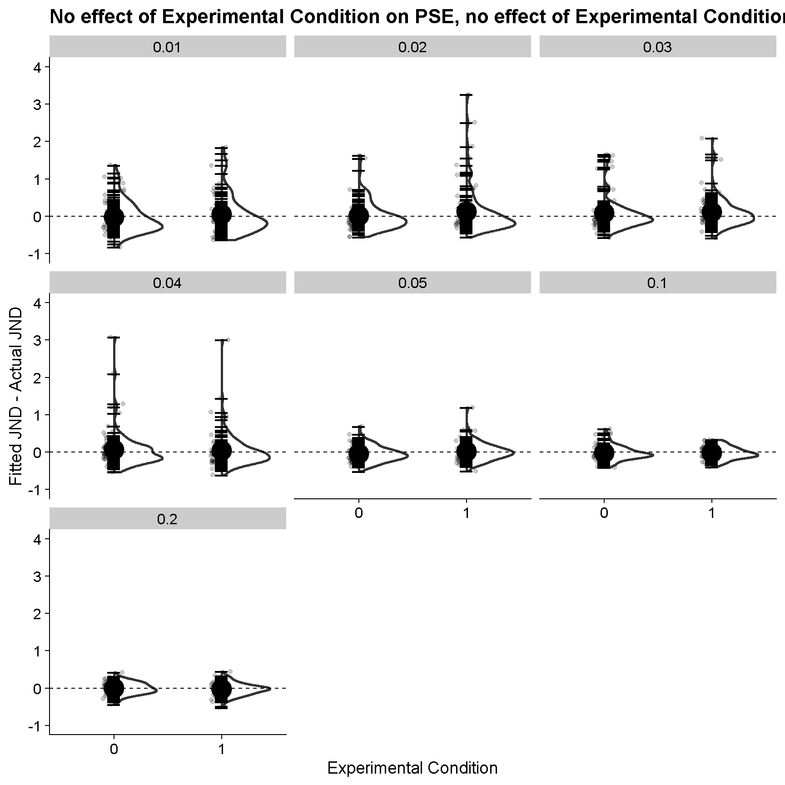
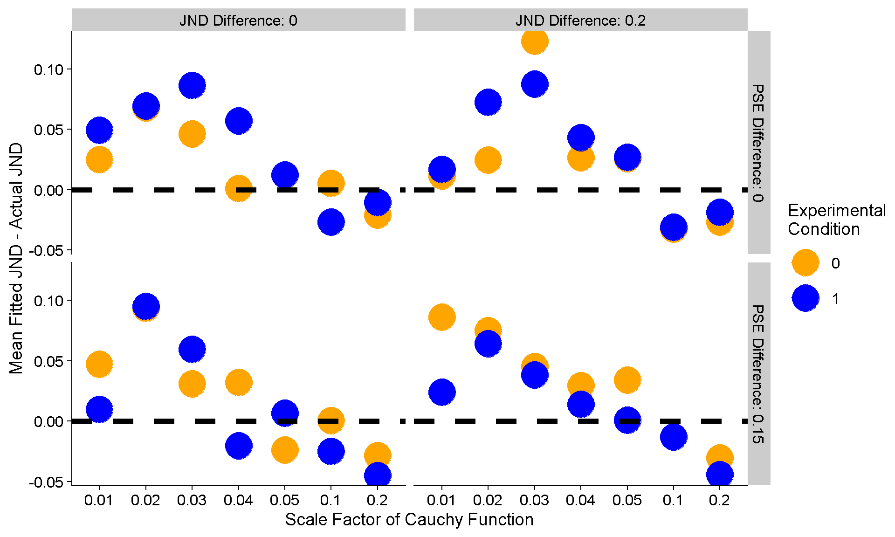

(Spoiler: yeah, it’s probably okay.)
Staircase procedures like the PEST staircase are often used to reduce the number of trials necessary to estimate PSEs in psychophysical designs. Some authors (citation need, but probably true) have cautioned against using the data collected using staircase procedures to obtain JND estimates as well, alleging that concentrating presented stimulus strengths around the PSE could lead to biased JND estimates. So what we are going to do in this lil’ blog post is have a look at this claim using simulations.
The idea is to generate a dataset of psychophysical response data with - varying underlying (known) JNDs - varying widths of the function the presented stimulus strengths are chosen from, i.e., clustered more or less narrowly around the PSE - varying the number of trias per fitted psychometric function
This is an adaptation of the procedure that I have published a PrePrint about a while ago (this one gets a link, not a citation, what are we, scientists?), so for a lot of the details on how to simulate psychphysical data I refer you to that. The following function is basically straight from the PrePrint and simulates one data set with a given number of participants, who each have different PSEs and JNDs, and it gives us the option to simulate two different condition which each can have different PSEs and JNDs on average. It also allows us to manipulate the widths of the function of the presentated stimulus strengths (which we are using a Cauchy function for here, although simply Gaussian functions can also work).
SimulatePsychometricData = function(nParticipants,
ConditionOfInterest,
StandardValues,
reps,
PSE_Differences,
JND_Differences,
Multiplicator_PSE_Standard,
Multiplicator_SD_Standard,
Type_ResponseFunction,
SD_ResponseFunctions,
Mean_Variability_Between,
SD_Variability_Between){
ID = paste0("S0",1:nParticipants)
Psychometric = expand.grid(ID=ID,
ConditionOfInterest=ConditionOfInterest,
StandardValues=StandardValues,
PSE_Difference = PSE_Differences,
JND_Difference = JND_Differences,
reps = 1:reps,
SD_ResponseFunction = SD_ResponseFunctions)
Psychometric = Psychometric %>%
group_by(ID) %>%#
mutate(PSE_Factor_ID = rnorm(1,1,Mean_Variability_Between), #how much variability is in the means of the psychometric functions between subjects?
SD_Factor_ID = rnorm(1,1,SD_Variability_Between)) #how much variability is in the standard deviations of the psychometric functions between subjects?
Psychometric = Psychometric %>%
mutate(
Mean_Standard = StandardValues+StandardValues*Multiplicator_PSE_Standard,
SD_Standard = StandardValues*Multiplicator_SD_Standard,
Mean = (Mean_Standard + (ConditionOfInterest==1)*Mean_Standard*PSE_Difference),
SD = abs(SD_Standard + (ConditionOfInterest==1)*SD_Standard*JND_Difference))
Psychometric = Psychometric %>%
mutate(
Mean = Mean*PSE_Factor_ID,
SD = SD*SD_Factor_ID)
if (Type_ResponseFunction == "normal"){
Psychometric = Psychometric %>%
mutate(
staircase_factor = rnorm(length(reps),1,SD_ResponseFunction*(1+ConditionOfInterest*JND_Difference)))
} else if (Type_ResponseFunction == "Cauchy"){
Psychometric = Psychometric %>%
mutate(
staircase_factor = rcauchy(length(reps),1,SD_ResponseFunction*(1+ConditionOfInterest*JND_Difference)))
} else{
print("distribution not valid")
}
Psychometric = Psychometric %>%
mutate(Presented_TestStimulusStrength = Mean*staircase_factor,
Difference = Presented_TestStimulusStrength - StandardValues)
Psychometric = Psychometric %>%
mutate(
AnswerProbability = pnorm(Presented_TestStimulusStrength,Mean,SD),
Answer = as.numeric(rbernoulli(length(AnswerProbability),AnswerProbability))
)
Psychometric = Psychometric %>%
filter(abs(staircase_factor-1) < 0.75) %>%
group_by(ID,ConditionOfInterest,StandardValues,Difference) %>%
mutate(Yes = sum(Answer==1),
Total = length(ConditionOfInterest))
Psychometric
}We can use this function to generate data sets with known underlying parameters. We’re gonna simulate a bunch of datasets where we vary the difference in PSE and the difference in JNDs between a baseline and an experimental condition, as well as the width of the distribution that we draw our stimulus strengths from that we present to our participant. We draw these values from Cauchy functions, and we vary its scaling factor, that is its width – higher scaling factor = wider. For all the other values this function needs to successfully simulate datasets we simply use the default values that I also use in my little preprint, shouldn’t really affect the results too much.
# RangeRepetitions = c(40,70,100)
# nParticipants = 100
# ConditionOfInterest = c(0,1)
# StandardValues = c(5)
# PSE_Differences = c(0,0.15)
# JND_Differences = c(0,0.2)
# Multiplicator_PSE_Standard = 0
# Multiplicator_SD_Standard = 0.15
# Type_ResponseFunction = "Cauchy"
# SD_ResponseFunctions = c(0.01,0.02,0.03,0.04,0.05,0.1,0.2)
# Mean_Variability_Between = 0.2
# SD_Variability_Between = 0.2
#
# DataframeAtrevido = data.frame()
#
# for (reps in RangeRepetitions){
# for (SD_ResponseFunction in SD_ResponseFunctions){
# DataframeAtrevido_Temp = SimulatePsychometricData(nParticipants,
# ConditionOfInterest,
# StandardValues,
# reps,
# PSE_Differences,
# JND_Differences,
# Multiplicator_PSE_Standard,
# Multiplicator_SD_Standard,
# Type_ResponseFunction,
# SD_ResponseFunction,
# Mean_Variability_Between,
# SD_Variability_Between)
# DataframeAtrevido_Temp$nReps = reps
# DataframeAtrevido = rbind(DataframeAtrevido,DataframeAtrevido_Temp)
# }
# }Since the function filters out presented stimulus strengths that are too extreme, which could lead to having fewer data points for the wider functions, which in turn could influence fitted JNDs, we make sure that the maximum number of trials for any given width is the same.
# DataframeAtrevido = DataframeAtrevido %>%
# group_by(ID,StandardValues,ConditionOfInterest,SD_ResponseFunction,PSE_Difference,JND_Difference, nReps) %>%
# mutate(NumberOfTrials = length(ID),
# RowNumber = 1:length(ID)) %>%
# group_by(ID,reps,ConditionOfInterest,PSE_Difference,JND_Difference) %>%
# mutate(MinNumberOfTrials = min(NumberOfTrials)) %>%
# filter(RowNumber <= MinNumberOfTrials)
#
# save(DataframeAtrevido, file = paste0(dirname(rstudioapi::getSourceEditorContext()$path),"/AreJNDsOK/DataframeAtrevido.RData"))
load(file = "DataframeAtrevido.RData")# JNDs = quickpsy::quickpsy(DataframeAtrevido,
# Presented_TestStimulusStrength,
# Yes,
# grouping = .(ID,StandardValues,ConditionOfInterest,nReps,SD_ResponseFunction,PSE_Difference,JND_Difference),
# bootstrap = "none")
#
# FittedJNDs = JNDs$par %>%
# filter(parn == "p2") %>%
# mutate(ActualSD = SD)
# save(FittedJNDs, file = paste0(dirname(rstudioapi::getSourceEditorContext()$path),"/AreJNDsOK/FittedJNDs.RData"))
load(file = "FittedJNDs.RData")Please note that, given that we simulate 100 participants, fitting the psychometric functions can take a while, so I just did that once, saved the data set and load it when needed. Same for the response data set “DataframeAtrevido”.
Now for the interesting (to some, hopefully) part. Let’s first have a look at how the presented stimulus strengths are distributed around the PSEs for different scale factors of the Cauchy function. I chose the 100-trials-per-JND condition for this illustration.
ggplot(DataframeAtrevido %>% filter(ID == "S01" & ConditionOfInterest == 1 & JND_Difference == 0 & PSE_Difference == 0 & nReps == 100) %>%
mutate(FunctionType = paste0("Cauchy (",SD_ResponseFunction,")")),
aes(Presented_TestStimulusStrength)) +
geom_density() +
facet_wrap(FunctionType~.) +
xlab("Presented Stimulus Strength") +
ylab("Density")And this is what the corresponding psychometric functions might look like:
ggplot(DataframeAtrevido %>% filter(ID == "S01" & ConditionOfInterest == 1 & JND_Difference == 0 & PSE_Difference == 0 & nReps == 100),
aes(Presented_TestStimulusStrength, Answer)) +
binomial_smooth() +
geom_point() +
facet_wrap(SD_ResponseFunction~.) +
xlab("Presented Stimulus Strength") +
ylab("Probability to answer that PEST is stronger")Now let’s look at the fitted versus real JNDs – here’s the plot where we have no difference between the baseline condition and the experimental condition (nor in PSEs nor in JNDs). On the y axis we got the fitted JNDs minus the actual, underlying JNDs. The different panels are for different scales of the Cauchy function used to present the stimulus – from “everything very much centered around the PSE” to “a wider spread, a bit more similar to a Method of Constant Stimuli situation”.
ggplot(FittedJNDs %>% filter(JND_Difference == 0 & PSE_Difference == 0 & nReps == 100),aes(as.factor(ConditionOfInterest),par-ActualSD)) +
geom_jitter(alpha = 0.2, width = 0.1) +
geom_flat_violin(size=1) +
ylim(c(-1,4)) +
xlab("Experimental Condition") +
ylab("Fitted JND - Actual JND") +
stat_summary(fun = "mean", geom = "point", size = 6, aes(group=ID), shape = 95) +
stat_summary(fun = "mean", geom = "point", size = 8, aes(group=0), shape = 16, color = "black") +
facet_wrap(SD_ResponseFunction~.) +
ggtitle("No effect of Experimental Condition on PSE, no effect of Experimental Condition on JND") +
geom_hline(yintercept = 0, linetype = 2)
It’s all a bit hard to see in this type of plot, so let’s boil it down to the mean difference between the fitted JNDs and the actual, underlying JNDs:
FittedJNDs_Means_Diffs = FittedJNDs %>%
filter(par < 5) %>%
group_by(SD_ResponseFunction, ConditionOfInterest,PSE_Difference,JND_Difference) %>%
mutate(Mean_JND_Difference = mean(par-ActualSD)) %>%
slice(1) %>%
mutate(FunctionType = paste0("Cauchy\n(",SD_ResponseFunction,")"),
PSE_Dif = paste0("PSE Difference: ", PSE_Difference),
JND_Dif = paste0("JND Difference: ", JND_Difference)) %>%
ungroup() %>%
dplyr::select(FunctionType,ConditionOfInterest,Mean_JND_Difference,PSE_Dif,JND_Dif)Here we got the mean difference between the fitted JNDs and the actual JNDs for each of the differences in JNDs and PSEs between baseline and experimental condition, further divided up by the width of the Cauchy distribution the presented stimulus strengths were chosen from. We also have the number of trials each staircase in based on as columns of panels. The dashed line at y = 0 indicates no differences between fitted and actual JNDs.
ggplot(FittedJNDs_Means_Diffs,aes(FunctionType,Mean_JND_Difference,color = as.factor(ConditionOfInterest))) +
geom_point(size = 10) +
geom_line() +
xlab("Response Function") +
ylab("Mean Fitted JND - Actual JND") +
scale_color_manual(name = "Experimental\nCondition",values = c("orange","blue")) +
facet_grid(PSE_Dif~JND_Dif) +
scale_x_discrete(labels = c(0.01,0.02,0.03,0.04,0.05,0.1,0.2), name = "Scale Factor of Cauchy Function") +
geom_hline(yintercept = 0, linetype = 2, size = 2)
So we can see that the JNDs are overestimated when the Cauchy function is very narrow, and then mostly accurately for the wider distributions – across the board. That’s somewhat concerning because it would be nice if the fitted JNDs corresponded to the actual JNDs … but alas, we can’t have nice things. However, what’s more important though is that this discrepancy between fitted and real JNDs does not appear to vary significantly with simulated differences between baseline and experimental condition. Cool!
Now what about the number of trials per JND? Here’s the same data, but broken down into JNDs that are based on 40, 70 and 100 trials.
FittedJNDs_Means_nReps = FittedJNDs %>%
filter(par < 5) %>%
group_by(SD_ResponseFunction, ConditionOfInterest,PSE_Difference,JND_Difference,nReps) %>%
mutate(Mean_JND_Difference = mean(par-ActualSD)) %>%
slice(1) %>%
mutate(FunctionType = paste0("Cauchy\n(",SD_ResponseFunction,")"),
PSE_Dif = paste0("PSE Difference: ", PSE_Difference),
JND_Dif = paste0("JND Difference: ", JND_Difference)) %>%
ungroup() %>%
dplyr::select(FunctionType,ConditionOfInterest,Mean_JND_Difference,PSE_Dif,JND_Dif,nReps)
ggplot(FittedJNDs_Means_nReps,aes(FunctionType,Mean_JND_Difference,color = as.factor(ConditionOfInterest))) +
geom_point(size = 10) +
xlab("Response Function") +
ylab("Mean Fitted JND - Actual JND") +
scale_color_manual(name = "Experimental\nCondition",values = c("orange","blue")) +
facet_grid(PSE_Dif*JND_Dif~nReps) +
scale_x_discrete(labels = c(0.01,0.02,0.03,0.04,0.05,0.1,0.2), name = "Scale Factor of Cauchy Function") +
geom_hline(yintercept = 0, linetype = 2, size = 2)Again nothing’s perfect, but no concerningly consistent trends.
I suppose there are some other concerns like a huge amount of noise if the staircases are too smoll. JNDs that are based on ~50 trials (a number of trials that’s often considered enough to assess PSEs) are gonna be pretty unreliable by themselves. HOWEVER… depending on our purpose that’s not necessarily a problem. Since this added noise is, well, random noise, we can make up for this lack of reliability of individual JND measures by simply collecting data from more participants.
It’s probably okay to use JNDs fitted based on staircase data. JNDs might be overestimated across the board, but if we compare between conditions that probably cancels out and we’re good. Also the number of trials per staircase is unlikely to shift fitted JNDs in a lawful manner.